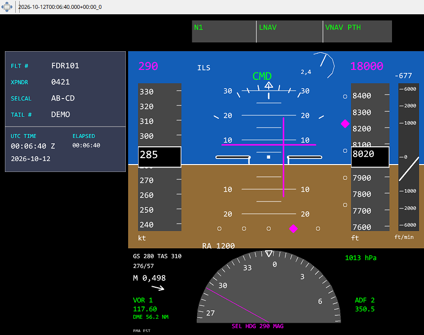
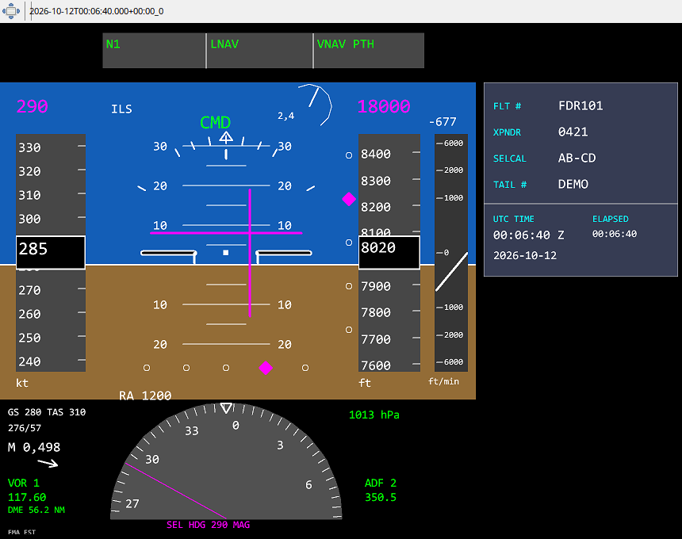

Trzy pola FMA nad horyzontem rozdzielaj¹ ci¹g, prowadzenie boczne i pionowe. W iFly aplikacja rekonstruuje ich treœæ z zapisanych flag AFDS, nastaw MCP i danych standardowych. Stan uzbrojony nie jest tym samym co tryb aktywny. Je¿eli stary lot nie zawiera danych SDK, zerowej wartoœci standardowego AUTOPILOT MASTER nie nale¿y uznawaæ za dowód wy³¹czonego CMD.
Belki FD u¿ywaj¹ zapisanych komend pitch/bank, a nie kierunku rzeczywistego ruchu. IAS/Mach i BARO/STD zale¿¹ od zapisanych nastaw. Minima BARO/RADIO s¹ pokazywane tylko przy dostêpnej wybranej wartoœci; znacznik na taœmie wymaga odpowiedniego odniesienia wysokoœci. WskaŸnik AoA jest opcjonalny i wymaga wa¿nych danych.
Panel dodatkowy pokazuje numer lotu, XPDR z zerami wiod¹cymi, SELCAL, rejestracjê, datê/UTC z nagrania i elapsed. W ustawieniach Debug mo¿na go ukryæ i wybraæ stronê: CPT po lewej, FO po prawej. Strza³ka wiatru jest wzglêdem kursu; bloki VOR/ADF po obu stronach heading pokazuj¹ zapisane Ÿród³a, identyfikatory, strojenie i dostêpne DME.

